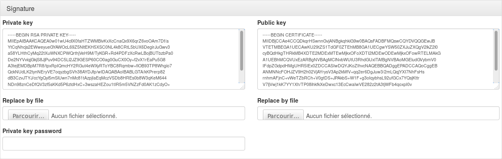

Table of Contents
SAML service configuration
Presentation
This documentation explains how configure SAML service in LL::NG, in particular:
- Install prerequisites
- Import or generate security keys
- Set SAML end points
Prerequisites
Lasso

SAML2 implementation is based on Lasso. You will need a very recent version of Lasso (>= 2.5.0).
Debian/Ubuntu
You can use official Debian packages or those available here: http://deb.entrouvert.org/.
You will only need to install liblasso-perl package:
sudo apt-get install liblasso-perl
RHEL/CentOS/Fedora
RPMs are available in LL::NG RPM “extras” repository (see yum_repository)
Then install lasso and lasso-perl packages:
yum install lasso lasso-perl
Other
Download the Lasso tarball and compile it on your system.
Service configuration
Go in Manager and click on SAML 2 Service node.
Entry Identifier
Your EntityID, often use as metadata URL, by default #PORTAL#/saml/metadata.
<EntityDescriptor entityID="http://auth.example.com/saml/metadata"> ... </EntityDescriptor>
/saml/metadata suffix you have to change corresponding Apache rewrite rule.
Security parameters
You can define keys for SAML message signature and encryption. If no encryption keys are defined, signature keys are used for signature and encryption.
To define keys, you can:
- import your own private and public keys (
Replace by fileinput) - generate new public and private keys (
New keysbutton)
Private key password.

You can import a certificate containing the public key instead the raw public key. However, certificate will not be really validated by other SAML components (expiration date, common name, etc.), but will just be a public key wrapper.
openssl commands to issue a self-signed certificate:
$ openssl req -new -key private.key -out cert.csr $ openssl x509 -req -days 3650 -in cert.csr -signkey private.key -out cert.pem
- Use certificate in response: Certificate will be sent inside SAML responses.
- Signature method: set the signature algorithm
NameID formats
SAML can use different NameID formats. The NameID is the main user identifier, carried in SAML messages. You can configure here which field of LL::NG session will be associated to a NameID format.
Customizable NameID formats are:
- Email
- X509
- Windows
- Kerberos
Other NameID formats are automatically managed:
- Transient: NameID is generated
- Persistent: NameID is restored from previous sessions
- Undefined: Default NameID format is used
Authentication contexts
Each LL::NG authentication module has an authentication level, which can be associated to an SAML authentication context.
Customizable NameID formats are:
- Password
- Password protected transport
- TLS client
- Kerberos
Organization
<Organization> <OrganizationName xml:lang="en">Example</OrganizationName> <OrganizationDisplayName xml:lang="en">Example</OrganizationDisplayName> <OrganizationURL xml:lang="en">http://www.example.com</OrganizationURL> </Organization>
- Display Name: should be displayed on IDP, this is often your society name
- Name: internal name
- URL: URL of your society
Service Provider
<SPSSODescriptor> ... </SPSSODescriptor>
General options
- Signed Authentication Request: set to On to always sign authentication request.
- Want Assertions Signed: set to On to require that received assertions are signed.
Single Logout
For each binding you can set:
- Location: Access Point for SLO request.
- Response Location: Access Point for SLO response.
Available bindings are:
- HTTP Redirect
- HTTP POST
- HTTP SOAP
Assertion Consumer
For each binding you can set:
- Default: will this binding be used by default for authentication response.
- Location: Access Point for SSO request and response.
Available bindings are:
- HTTP Artifact
- HTTP POST
Artifact Resolution
The only authorized binding is SOAP. This should be set as Default.
Identity Provider
<IDPSSODescriptor> ... </IDPSSODescriptor>
General parameters
- Want Authentication Request Signed: set to On to require that received authentication request are signed.
Single Sign On
For each binding you can set:
- Location: Access Point for SSO request.
- Response Location: Access Point for SSO response.
Available bindings are:
- HTTP Redirect
- HTTP POST
- HTTP Artifact
- HTTP SOAP
Single Logout
For each binding you can set:
- Location: Access Point for SLO request.
- Response Location: Access Point for SLO response.
Available bindings are:
- HTTP Redirect
- HTTP POST
- HTTP SOAP
Artifact Resolution
The only authorized binding is SOAP. This should be set as Default.
Attribute Authority
<AttributeAuthorityDescriptor> ... </AttributeAuthorityDescriptor>
Attribute Service
This is the only service to configure, and it accept only the SOAP binding.
Response Location should be empty, as SOAP responses are directly returned (synchronous binding).
Advanced
These parameters are not mandatory to run SAML service, but can help to customize it:
- IDP resolution cookie name: by default, it's the LL::NG cookie name suffixed by
idp, for example:lemonldapidp. - UTF8 metadata conversion: set to On to force partner's metadata conversion.
SAML sessions module name and options
By default, the main session module is used to store SAML temporary data (like relay-states), but SAML sessions need to use a session module compatible with the sessions restrictions feature.
This is not the case of Memcached for example. In this case, you can choose a different module to manage SAML sessions.
- RelayState session timeout: timeout for RelayState sessions. By default, the RelayState session is deleted when it is read. This timeout allows one to purge sessions of lost RelayState.
- Use specific query_string method: the CGI query_string method may break invalid URL encoded signatures (issued for example by ADFS). This option allows one to use a specific method to extract query string, that should be compliant with non standard URL encoded parameters.
Common Domain Cookie
The common domain is used by SAML SP to find an Identity Provider for the user, and by SAML IDP to register itself in user's IDP list.
Configuration parameters are:
- Activation: Set to On to enable Common Domain Cookie support.
- Common domain: Name of the common domain (where common cookie is available).
- Reader URL: URL used by SAML SP to read the cookie. Leave blank to deactivate the feature.
- Writer URL: URL used by SAML IDP to write the cookie. Leave blank to deactivate the feature.
Discovery Protocol
When Discovery Protocol is enabled, the LL::NG IDP list is no more used. Instead user is redirected on the discovery service and is redirected back to LL::NG with the chosen IDP.
Configuration parameters are:
- Activation: Set to On to enable Discovery Protocol support.
- EndPoint URL: Discovery service page
- Policy: Set a value here if you don't want to use the default policy (
urn:oasis:names:tc:SAML:profiles:SSO:idp-discovery-protocol:single) - Is passive: Enable this option to avoid user interaction on discovery service page